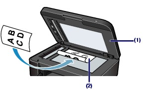

Loading Originals on the Platen Glass
Loading Originals on the Platen GlassYou can load originals to copy, fax, or scan on the Platen Glass.
You may have to load the original in a different position depending on the function you selected in the copy mode or scan mode. Load the original in the correct position according to the selected function. If you do not load the original correctly, it may not be scanned properly.
 Important Important
|
Load an original on the Platen Glass.
(1) Open the Document Cover.
| Important
|
(2) Load the original WITH THE SIDE TO SCAN FACING DOWN on the Platen Glass.
Make sure of the proper position to load the original for each function.
See How to Load Originals for Each Function.

| Important
- Do not place any objects weighing 4.4 lb / 2.0 kg or more on the Platen Glass. - Do not put any pressure of 4.4 lb / 2.0 kg or more on the Platen Glass, such as pressing down the original. Failure to observe the above may cause the scanner to malfunction or the Platen Glass to break. |
Close the Document Cover gently.
| Important
|